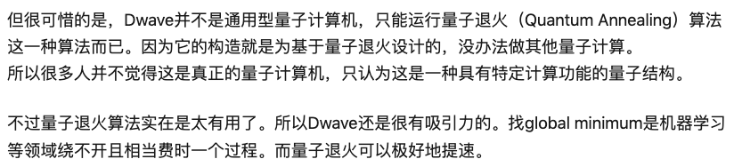

量子计算——读「古今密码学趣谈」展望未来的密码学
（笔记迁移 @ 2020年）
主要讲了密码学怎么来应对量子计算。量子计算的并行性（N个量子位，能同时表示2^N个数字，而同样的比特位，同时只能表示一个2^N以内的数字。太神奇了），将以前指数级别的破解难度降低为了线性级别。RSA、ECC等现代密码学技术都会被轻易攻破。
量子计算机的历史：
- 在美国电话电报公司贝尔实验室工作的数学家肖尔（Peter W.Shor，1959）于1994年发现了快速分解大整数的量子算法！他因此于1998年获得了由国际数学联盟颁发的奈望林纳应用数学奖。
- 2001年，美国IBM公司率先研制成功7个量子位的示例型量子计算机。
- 2007年2月，加拿大D-Wave System公司宣布研制成功世界上第一台商用16量子位的量子计算机。
- 2011年5月30日，D-Wave System公司宣布研制成功128量子位的量子计算机，并且出人意料地以每台 1000万美元的价格公开出售，还提供与传统计算机软件接口的软件工具包。
- 2011年9月2日，美国加州大学圣芭芭拉分校的科学家宣布，已通过量子电路成功实现了冯·诺依曼计算机结构，证实了未来量子大规模集成电路指日可待。
- 2012 年3月1日，美国IBM公司宣布，找到一种可以提升量子计算机规模的关键技术，从而使大规模量子计算机的实现成为可能
- In 2015, D-Wave’s 2X Quantum Computer with more than 1000 qubits was installed at the Quantum Artificial Intelligence Lab at NASA Ames Research Center.
- January 2017 2048 qubits
- In 2019, D-Wave announced a 5000 qubit system available mid-2020, using their new Pegasus chip with 15 connections per qubit.
关于Dwave，客观看待，以下是引用：

使用Dwave的量子退火提速找机器学习中的最优解，这是个很实用的功能。
量子计算机中的算法需要特殊设计的。
现代密码学是基于一些数学难题的，比如大整数分解、椭圆曲线。为了对抗量子计算破解，如果继续走基于数学路线，就需要找新的数学难题，比如基于格的难题（虽然接触过，但还是无法理解）。
非数学难题思路的应对方式（看的一知半解）：
- 量子密码。思路起源：1969 年，美国哥伦比亚大学的一位名叫威斯纳（Stephen Wiesner，1942）的研究生完成了一篇题为“共轭编码”（Conjugate Coding）的论文，其中提出了“量子钱”（Quantum Money）的概念。根据量子力学原理，任何对量子的观察必然都会干扰其原来的状态，从而导致钱币失效。| 所以，使用量子密码达到安全通信的根本就是一旦观察会干扰其原来的状态。（现代密码学是对通信内容进行加密。）
- 生物密码，指的是DNA密码，DNA的形成是一个分子生物过程。一条DNA链由数百万个的基本单位按不同的顺序排列而成，所以其中包含了惊人的信息量。从数学的角度来看，一条DNA链是由4种不同的符号A,G,C,T组成的长串，类似于计算机所处理的以0,1组成的符号串。但DNA的形成是一个分子生物过程，并非数学计算的结果。于是科学家们突发奇想：能否利用形成DNA的分子生物过程来解决数学问题呢？| 将信息隐藏在DNA微点（微点的定义？）
- 混沌密码。实践更少了。不做赘述。混沌，蝴蝶效应源于此。
参考：
- D-Wave Systems https://en.wikipedia.org/wiki/D-Wave_Systems
- 如何用 IT 业者能听懂的话介绍量子计算的原理？ https://www.zhihu.com/question/26933442/answer/34598726
Last modified on 2019-10-31